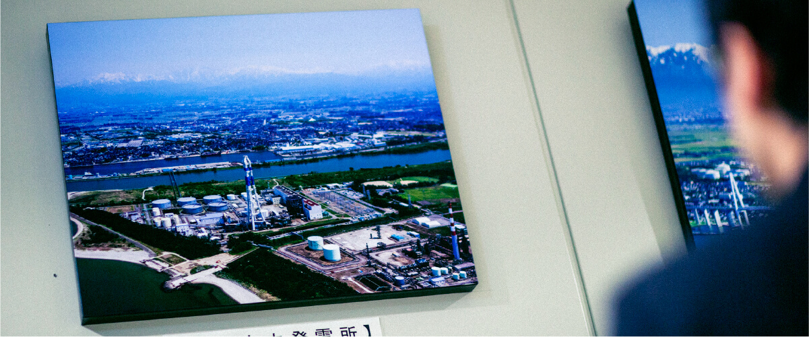
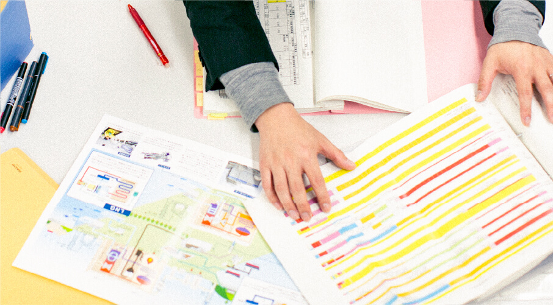

火力部門は、石油、石炭、LNGを燃料とした５か所の火力発電所を運転し、現在の当社の発電電力量の約3/4を発電しています。また、石炭を燃料とする火力発電所では、木質バイオマスの混焼も行っています。
火力発電所の安全・安定運転には、高い技術力と品質の確保が必要です。そのため、運転管理業務、保守管理業務、保安防災・庶務業務担当が、日々研鑽し、また密接に連携して安全・安定運転を実現し電力の安定供給の一翼を担いながら、コスト競争力の向上に努めています。
また、火力発電の課題である脱炭素にも積極的に取り組んでおり、クリーン燃料への転換や新技術の導入など、可能性のある選択肢の調査を行い、カーボンニュートラル達成に向けた検討を進めています。
火力部 火力保守チーム長井 誠示
入社 / 2004年
総合理工学研究科 創造エネルギー専攻修了
2019年7月 敦賀火力発電所 技術課 副課長
2020年9月 火力部 火力保守チーム 副課長
経歴は取材時点のものです

 歩んできたキャリアは？
歩んできたキャリアは？
機械分野でも最大級のスケール感を有する機器を制御する仕事に携わりたいとの動機で入社し、石炭火力を扱う七尾大田発電所や敦賀火力発電所でプラント運転、ボイラー保守業務に携わるなど、多くの発電現場でキャリアを歩んできました。また、電力中央研究所出向や火力部での設備保守総括業務も経験。北陸電力の火力発電を担ってきた多くの先輩とともに、さまざまな試行錯誤を行ってきた経験すべてが今の私の糧になっています。
 現在の仕事、
現在の仕事、
プロとして意識していることは？
北陸電力では、ベースロード、ミドル、ピーク電源とそれぞれ役割が異なる7箇所の火力設備が存在しています。また、環境性向上へコンバインドサイクル発電や木質バイオマス燃料混焼発電の導入など、積極的に新技術を活用する取り組みを進めています。その中で私は発電設備の保守総括業務を担い、多様な技術知識をもとに現状把握、トラブル復旧の指揮を執っています。原子力発電が停止している現在、火力発電の高出力連続運転時にボイラーやタービン等のトラブルは運転停止にとどまらず、最悪の場合、電力不足から大規模な停電を引き起こす可能性があります。そのような事態を未然に防ぐことが私の使命です。各発電所と連携のもと横断的な業務を行う保守チームには、全火力発電設備の情報が集約されます。あらゆる知見を自分に取り入れ、奥深い火力発電を担っていく日々を送れることは、一人の技術者として刺激あふれることだと感じています。
これから挑みたいことは？
北陸電力は比較的小規模の電力会社である分、一人ひとりが担う範囲が大きく、要求される技術レベルが高いのが特徴です。そのような中、私自身が現場で得てきた、教科書や座学ではわからない知識や失敗からの学びを後輩にきちんと伝え、北陸電力の未来を担う次の世代に託していくことで、これからの北陸電力に貢献したいと考えています。

 学生へメッセージを
学生へメッセージを
私が入社した頃と比べて電力業界を取り巻く状況は大きく変化しており、いまだその変化の途中にあると思います。これからの火力技術者の仕事は、変化に向き合い、乗り越えていく、そんな挑戦の連続になるはずです。失敗を恐れない、ときに失敗をしても再び立ち上がる強い意志を持ち続け、明日の発電を担って欲しいと思います。

類似トラブル調査
トラブル発生時には、主管部で保管されている類似資料の調査を実施。発生しているトラブルの原因を推定、点検方法について補助資料を発電所に展開することで、現場対応を支援します。
ワーキンググループとりまとめ
各発電所ワーキンググループと会議を開催、取りまとめを行います。トラブルを防ぐとともに、早急な復旧対応ができるよう円滑な連携体制を構築します。
後輩社員への指導
主管部での仕事は現場と異なる部分も多く、保守を担う後輩社員に対して業務の要点、各現場との連携についてアドバイスします。これまでに経験したトラブルや対応など座学だけでない生の情報を伝えるようにしています。
新技術採用を検討
現在、出力の大半を占める火力施設の発電効率や環境性、また、安定性を高めていくことも重要な役割。火力発電分野のさらなる進化へ、新技術採用の検討を行っていきます。
富山新港火力発電所 発電環境課下村 明香里
入社 / 2018年
工学部 電気電子システム工学科卒業
現在に至るまでの経歴
2018年5月 富山新港火力発電所 発電環境課
経歴は取材時点のものです
 入社動機は？
入社動機は？
工学部で電気分野を学んでいた知識を活用し、世の中に貢献する仕事を担える企業、そう考え志望したのが北陸電力でした。また、近年では女性のキャリアや仕事とライフイベント両立の観点でも環境整備に力を入れていることも印象的で、ここでなら働きやすさを実感し、仕事に打ち込んでいけると思い、入社しました。
 現在の仕事、その魅力は？
現在の仕事、その魅力は？
北陸電力において最大出力を誇る新港火力発電所にて、LNGと油焚きが可能な新港4号機の運転業務を担っています。当機は、元々、油焚き専用でしたが、2018年に運転を開始したLNG火力1号機にあわせて、LNGも燃焼が可能となるよう改造されたプラントです。電力供給はもちろん、LNG焚き改造後は、余剰ガス消費やLNG船受け入れスケジュールの観点から重要な位置づけのプラントです。現在は2交替制の当直勤務のもと、常に緊張感を持って安定・安全運転を行うため巡視や作業、トラブル対応、負荷変化やユニット起動停止操作を行っています。加えて、さらなる技術習得のため、実習を通してプラント制御についても学んでいます。若手ながらにして携われる業務が多くうれしさを感じるとともに、技術を習得しスキルアップしていける過程に大きなやりがいを感じています。
 これからの目標は？
これからの目標は？
高い発電効率と環境性を両立するLNG火力発電は、日本におけるエネルギーミックスの中でいっそう重要な役割を担うことが期待され、今後さらなる発展の可能性がある分野です。しかし、北陸電力においては、LNG火力設備は新港火力発電所にしかないため、知識や運転経験がある社員の数は多くありません。当社においてこれからの技術知見が蓄積されている領域で、火力のプロフェッショナルとなるべくプラント制御技術を身につけ、確かな現場経験を重ねていきたいと考えています。同時に技術系の女性社員として、これから入社してくる方々が働きやすいと実感できるような環境をつくり、サポートしていきたいと思っています。
 学生へメッセージを
学生へメッセージを
充実した教育制度や研修制度は北陸電力の大きな魅力の一つだと思います。豊富なカリキュラムや発電所での現場経験、また積極的にノウハウを伝授してくれる先輩方など、知見を深めていける環境が整っています。仕事を通して成長したいと思う方には、ぴったりの会社だと思います。
- 8:00
-
出社、直間引き継ぎ
2交替制で勤務しており、出勤後は夜勤をしていた当直から引き継ぎ。共有された運転中の作業内容や点検結果をもとにチームでミーティングを行います。
- 10:00
-
設備パトロール
設備パトロールへ。機器の潤滑油補給や配管内のドレン抜きなどメンテナンスも併せて実施します。目や耳など五感を使って運転状態を確認し、異常の早期発見に努めます。
- 13:30
-
現場作業
発電機の運転を支える補機の切り替えや確認運転を行います。各現場での作業において操作や立ち会いが必要な場合は対応していきます。
- 17:00
-
制御実習での操作
中央給電指令所からの電力需要に応じた指令を受け、発電量を変化させる操作を実行します。先輩社員のアドバイスをもとに取り組み、一つひとつの技能を習得していきます。
- 20:00
-
ミーティング、退社
夕方には重要箇所を再度パトロールした後、1日の運転状況や特記事項をミーティングで共有。夜勤を担う引き継ぎに報告を済ませ、発電所を後にします。